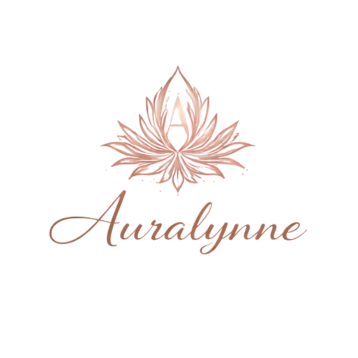

Marca + performance + produto digital
Projetos pensados para elevar a percepcao da marca e organizar o crescimento.
Da estrategia do feed ao sistema que sustenta a operacao.
Auralynne WhatsAppAuralynne studio
Social media, sites e sistemas para marcas em expansao
A Auralynne transforma imagem em autoridade e processos em experiencias mais fluidas. Unimos conteudo, design e software para criar uma estrutura digital mais elegante e eficiente.
Gestao de redes sociais, sites e sistemas sob medida em uma direcao unica de marca.
Projetos pensados para elevar a percepcao da marca e organizar o crescimento.
Da estrategia do feed ao sistema que sustenta a operacao.
Solucoes integradas
Posicionamento com consistencia e intencao.
Posicionamento com profundidade
A Auralynne foi pensada para marcas que querem crescer sem abrir mao de sensibilidade visual. Aqui, conteudo, site e sistema deixam de ser partes soltas e passam a formar uma experiencia unica.
Posicionamento
Direcao visual, conteudo e narrativa digital alinhados para causar percepcao imediata de valor.
Estrutura
Sites e sistemas entram para sustentar a experiencia, simplificar processos e preparar o negocio para crescer.
Portfolio e resultados
Projeto assinatura
Resultado percebido
Quando design, conteudo e tecnologia falam a mesma lingua, a marca passa a ser vista como mais estruturada e mais desejavel.
Metodo
Entendimento da marca, objetivos, publico e gargalos operacionais.
Definicao de linguagem visual, mensagem, canais e escopo tecnico.
Execucao do projeto com foco em refinamento, clareza e funcionalidade.
Ajustes, novas entregas e crescimento continuo da estrutura digital.
Perguntas frequentes
Nao. A proposta e integrar branding, social media e desenvolvimento para que a marca tenha uma presenca bonita na frente e uma estrutura eficiente nos bastidores.
Sim. Cada negocio tem um momento diferente, entao o escopo pode envolver apenas conteudo, um novo site ou tambem um sistema sob medida.
Pode sim. A estrutura pode evoluir para paginas internas, portfolio, blog, area administrativa ou qualquer outra necessidade futura.